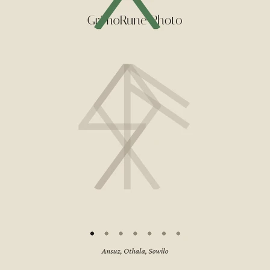

Grimorune photo
Un grimoire gravé d’une bindrune qui projette en hologramme, comme un diaporama magique, les photos collées dans l’album. La projection s’élève au-dessus du livre ouvert.
Trois runes s’enchaînent : Ansuz, le pouvoir de l’expression, exprime ; Othala, l’héritage et la transmission du savoir et de la culture, transmet ; Sowilo, le soleil et la lumière, projette.
Fiches


Animation
